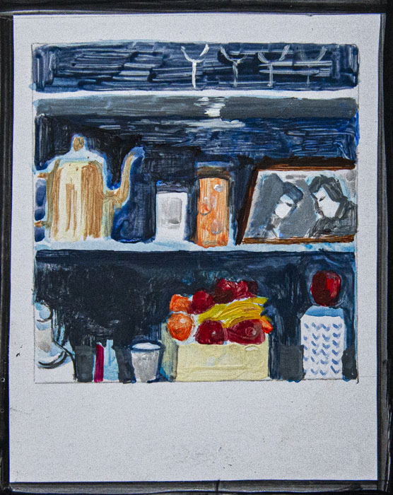
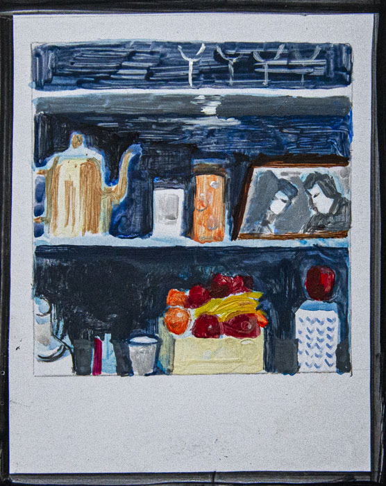
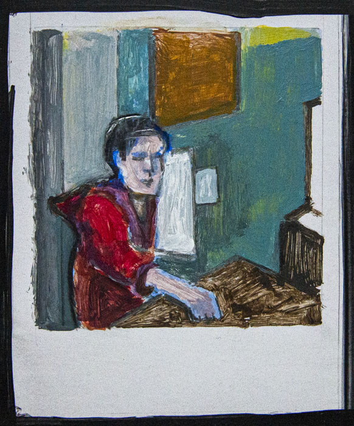
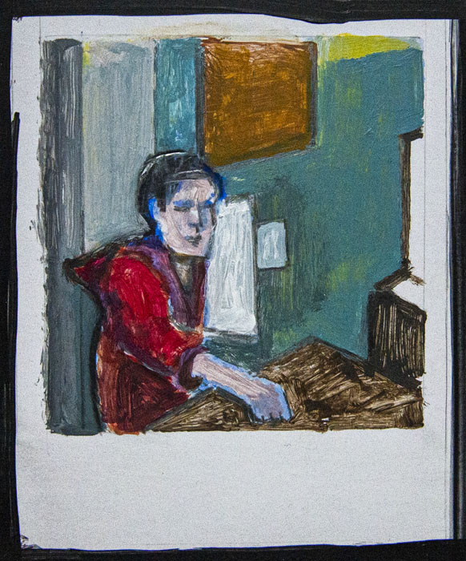

 



David F Maxwell is a figurative painter known for his emotionally charged raw imagery and fixation on personal motifs. Best known for his depictions of popes, crucifixions and portraits of close friends, his abstracted figures are typically isolated in geometrical cages which give them vague 3D depth, set against flat, nondescript backgrounds. David says that he sees images "in series", and his work, which numbers extant paintings along with many others he destroyed, typically focuses on a single subject for sustained periods, often in triptych or diptych formats. His output can be broadly described as sequences or variations on single motifs; including the 1990s Picasso-influenced bio-morphs and Furies, the 1980s male heads isolated in rooms or geometric structures, the 1950s screaming popes, the mid-to-late 1950s animals and lone figures, the early 1960s crucifixions, the mid to late 1960s portraits of friends, the 1970s self-portraits, and the cooler more technical 1980s paintings.